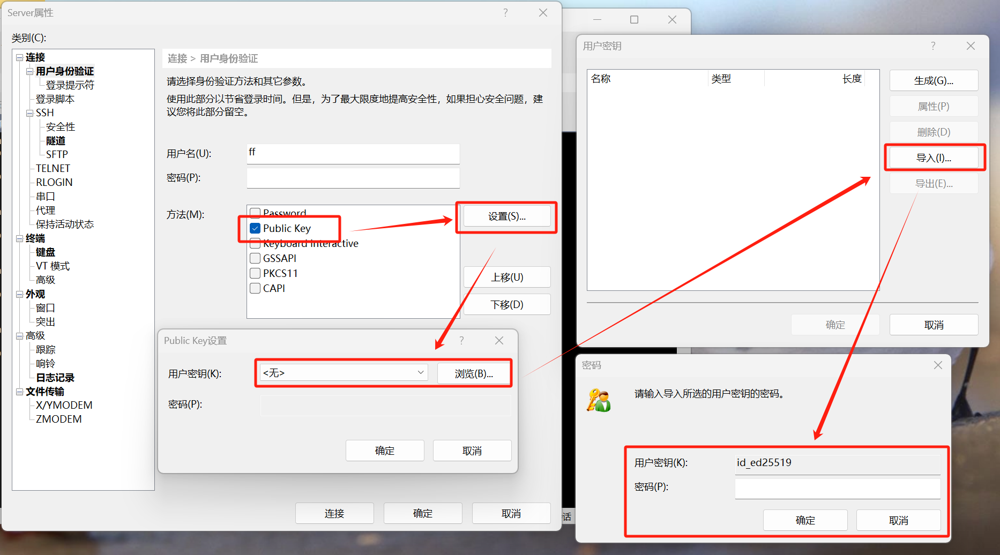

实验室服务器使用指南¶
服务器是课题组同学共有的计算资源，使用前请阅读本文档，了解服务器的使用方法和注意事项。
登录认证方式¶
Warning
由于安全隐患原因，我们已经禁止 SSH 连接使用密码认证！
使用 SSH 公钥认证登录：
- 公钥认证是一种比密码/口令更加安全的认证方式，它基于非对称加密算法。算法使用成对的公钥和私钥，其中，公钥用于加密数据，它可以安全公开；私钥用于解密数据，需要用户妥善保存，不能透露给任何人。
- 用户在客户机上生成密钥对之后，将公钥上传至服务器。需要连接认证时，服务器会让登录方对指定内容解密，如果登录方能够正确解密，那么就证明了登录者的身份。
公钥认证的优势：
- 非常安全：私钥只存在于用户本地，不会以任何形式进入网络。只要攻击者拿不到私钥，无论如何也认证不了，永远杜绝弱密码问题
- 连接方便：不需要记忆和输入密码，使用 ssh-agent 工具后，连 passphrase 都不用敲
SSH 公钥认证操作方法¶
太长不看
使用 ssh-keygen 创建密钥对，然后把自己机器上的 ~/.ssh/id_ed25519.pub 文件发送给管理员
推荐参考 GitHub 文档，它提供了非常详细的教程。虽然这个教程用于连接 GitHub，但关于 SSH 密钥对的操作方法是适用的。
在 Windows 机器上使用公钥认证的方法大致如下：
- 检查已有密钥，通常存放在
~/.ssh目录下，应该有类似id_ed25519.pub的文件 - 若没有，参考 教程 生成一份密钥对，推荐使用 ED25519 密钥
- 拷贝你的公钥 (文件名以
.pub结尾) 到服务器~/.ssh/authorized_keys文件中- 必须是你账户自己的家目录
- 如果没有，请使用
mkdir .ssh/和touch authorized_keys自行创建 - 文件中，一行代表一个 SSH 公钥，它应该以
ssh-ed25519开头，后面跟一个随机字符串 - 保证这个文件你自己有权限，可以使用命令
chmod 600 ./authorized_keys修改
- 如果不想每次连接都输入 passphrase，可以参考 ssh-agent 的 使用方法
其他事项：
可以给自己的用户上传多个公钥，供多个设备使用。也可以把自己手里的密钥对通过物理拷贝的方式，在多台设备中使用。
对于命令行以外的客户端（例如 WinSCP, XShell 等），可以使用类似下图的方式设置公钥认证。导入时，需要使用私钥文件。

使用贴士¶
【必读】 我们的 3090 机器使用注意事项：
- 机器的 SSD 挂载于根目录下，容量较小，而我们的机械硬盘空间较为充裕，挂载于
/home1目录。如有大体积数据或模型（例如 10 GB 以上），建议保存于/home1/<user>文件夹下，以防止根目录盘爆空间。 - 请尽量避免使用 0 号 GPU！ 服务器机器散热较差，若长期连续高功率运转会让温度突破 90 度，硬件会强制下电自我保护，这时候就只能重启服务器。单卡任务请使用环境变量
CUDA_VISIBLE_DEVICES来选择特定 GPU；多卡任务请密切关注各卡的温度，若超过 90 度请立刻停止进程。
环境配置相关：
- Python 运行环境建议在自己的家目录下安装 miniconda，让虚拟环境与其他用户相隔离
- Docker 环境：普通用户没有权限使用 docker，可以让同学帮你加入 docker 用户组（获取访问 docker 的权限），或者直接切 root 操作（麻烦一点）
- 其他相关软件包涉及 apt 的，获取 root 权限后请慎重操作
校园网认证¶
当机器无法访问互联网时，可能是由于没有过校园网认证。我们提供了命令行工具 bitsrun 来登录校园网，该工具来自开源项目 bitsrun-rs。
请参考 该文档 配置你的校园网账户。配置文件位于 ~/.config/bitsrun/bit-user.json，以下是一个示例文件，其中的用户名密码和你在 10.0.0.55 认证页面输入的相同。
若希望保持校园网登录状态，可以使用以下命令挂一个后台进程：
服务器使用代理科学上网的方法¶
有时我们需要联网下载一些服务器不在中国大陆的资源，包括但不限于 GitHub 仓库、谷歌云盘文件等，可能会遇到网络问题无法成功下载。
我推荐你先尝试在自己的设备上下载文件，然后使用 scp / VSCode / WinSCP 等工具将下载好的上传到服务器中。注意大文件请移步 /home1/<user> 目录下。
如果你需要让特定进程使用代理科学上网，可以用环境变量临时设置代理地址为你自己机器的 Clash 端点。使用时注意检查 Clash 是否开放局域网、端口号是否正确。
调整外置风扇功率模式的方法¶
请按照以下步骤操作：
- 准备一台有网线插口的笔记本，以及一根网线，前往服务器机箱
- 机箱背面总共有三个网线插口，其中有两个并列，不要插那两个，插另外一个
- 笔记本开机，不联网，插入网线并观察机箱网线插口处亮灯
- 笔记本打开浏览器，输入 BMC IP，应该是 192.168.1.2，如果不是的话，服务器开机时应该会在屏幕上显示一下，如果还是找不到，就需要进 BIOS 找设置
- 顺利进入网页后，用户名和密码都是 ADMIN
- 在配置中找到风扇 (Fan Mode)，一共有三个模式，按需调整并点击 Save 即可
实在解决不了请联系思腾合力售后。